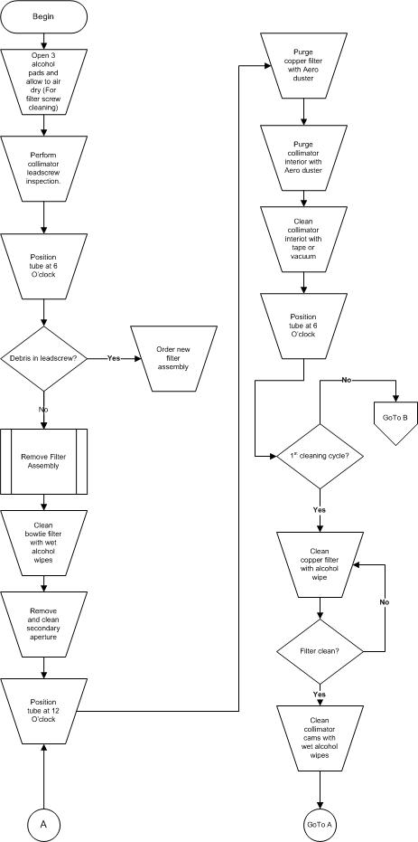
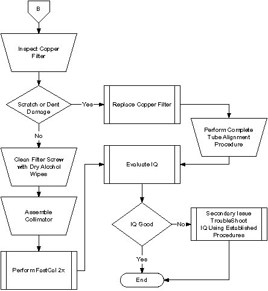
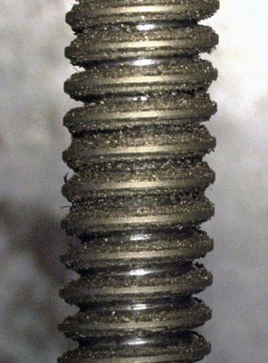
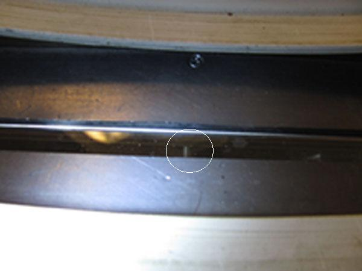
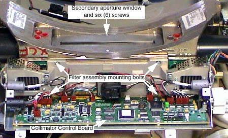
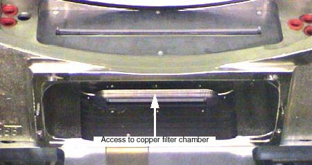
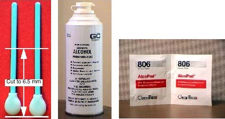
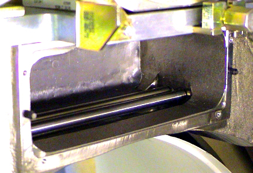
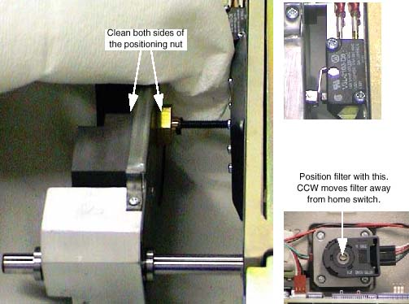

Operating Documentation
Direction 5181178-800, Rev# 16
BrightSpeed Select Service Methods Gen
Module Version 5.0, Version Date 3/8/11
Operating Documentation |
| Required Persons | Preliminary Reqs | Procedure | Finalization |
|---|---|---|---|
| 1 |
This procedure details the steps necessary to remove the contamination without removing the X-Ray Tube. The entire process will take approximately 3 hours. Tube/Collimator Alignments do not need to be performed. If you wish, you can check the alignments after completing the cleaning process. Any adjustments will require a complete Detailed Phantom Calibration.
| NOTE: | Refer to Do not check tube alignments if contamination is present. You will get false results. Perform Tube Alignment checks only after the contamination has been removed. |
| NOTE: | If you are at this step during a tube change, you must perform a complete Tube Alignment and Detailed Phantom Calibration. |
Illustration 1: Clean Process Flowchart

Illustration 2: Collimator Cleaning Flowchart (continued)

| Item | Qty | Effectivity | Part# | Manufacturer | |
|---|---|---|---|---|---|
| ESD Kit | 1 | - | 2220482 | - | |
| Aero Duster Spray | 1 | - | 2226685 | - | |
| Collimator Cleaning Kit | 1 | - | 2339299 | - | |
| Standard FE Toolkit | 1 | - | - | - | |
| Vacuum Cleaner or Tape | 1 | - | - | - | |
| Safety gloves | 1 | - | - | - | |
| Item | Qty | Effectivity | Part# | Manufacturer |
|---|---|---|---|---|
| As provided in the Collimator Cleaning Kit above. | - | - | - |
| ||||
| Risk of Electric Shock. | ||||
| Potentially Lethal voltages are present in the gantry. | ||||
| Follow proper lockout/tagout procedures. |
| ||||
| Lead Hazard | ||||
| Direct contact with lead in the collimator can lead to personal contamination. | ||||
| Wear safety gloves and wash hands after handling lead. |
Remove the Gantry Covers as needed.
| ||||
| Risk of Electric Shock. | ||||
| Potentially Lethal voltages are present in the gantry. | ||||
| Follow proper lockout/tagout procedures. |
Perform Gantry Power Lockout/Tagout procedures.
Open three (3) Lint Free Alcohol Pads, unfold and allow to air dry.
Position the gantry with the Collimator at six-o'clock.
Command apertures to the largest thickness and filter to closed position. Remove the Mylar filter. Using a flashlight, inspect the lead-screw and determine whether there are small gold colored brass filings on the threads. Refer to Illustration 3 below for an example of contamination (color appears gray, but will actually be gold colored). If contamination is present, replace the filter assembly utilizing Filter Assembly Replacement procedure in Step 6. Refer to Illustration 4 for a reference of where the lead-screw is located within the scan window. If replacement of the filter assembly is not required, proceed with the remainder of the steps in this procedure.
Illustration 3: Contaminated Collimator Filter Lead-screw

Illustration 4: Reference Photo

Remove Collimator Filter Assembly:
See Filter Assembly Replacement, for further details.
Clean Bowtie Filter with fresh, wet alcohol pads.Clean until pads are no longer soiled.
Remove Secondary Aperture and Output Window. See Illustration 5.
Use fresh, wet alcohol pads to clean the window and output port.
Inspect output port and carefully remove any metal or lead that protrudes into the x-ray beam path.
Take care not to lose the six (6) screws.
Take care not to damage or nick the lead aperture.
Illustration 5: Collimator Assembly

Rotate gantry so collimator is at 6 o’clock. See Illustration 6.
Using the Aero Duster and nozzle, blow out debris from the Copper Filter chamber.
Using the Aero Duster and nozzle, blow out debris from the Collimator Interior.
| ||||
| Do not use the metal end of the vacuum hose. This can scratch the collimator cams. Use non-metallic accessories supplied with the vacuum cleaner. | ||||
Clean collimator interior with vacuum cleaner or tape to remove any attached grease to metal particles.
Illustration 6: Cleaning Collimator Interior

Rotate gantry so collimator is at 12 o’clock and repeat step 8 cleaning.
Rotate gantry so collimator is at 6 o’clock and repeat step 8 cleaning. This is to ensure all loose particles are removed from Copper Filter Chamber.
Use clean swab, wet with alcohol, to clean the Copper Filter. See Illustration 7.
Cut swab to 7.5 cm length (3 inches).
| ||||
| Too much alcohol can dissolve glue that secures lead lining in place. This type of damage will result in intermittent artifacts and require collimator replacement. | ||||
Wet lint-free foam head with alcohol. Squeeze excess alcohol from head.
| ||||
| Use extreme to care not dent or scratch the copper filter. Such damage will require replacement of the copper filter, resulting in a complete tube change procedure. | ||||
Carefully insert swab into copper filter chamber, and wipe filter clean.
Remove swab and inspect copper filter. Repeat with clean swabs as necessary until clean.
Illustration 7: Swabs, Pure Alcohol and Alcohol Pads

| ||||
| Use care to not scratch or bend the cams. Do not allow cams to contact each other while rotating by hand. Damage can result in tracking errors or excessive patient dose. This would require collimator replacement. | ||||
Using fresh, wet alcohol pads, clean the Collimator Cams.
Rotate the Cams using the motor shaft on each side of the collimator.
Illustration 8: Cleaning Collimator Cams

| ||||
| Do not remove filter off of the positioning drive screw. Do not crush home switch with filter assembly. Either action will require replacement of the Filter Assembly. | ||||
Using the dry lint free alcohol pads from step 3, clean the Bowtie Filter assembly positioning screw. See Illustration 9.
Remove only excess grease from the drive nut.
Remove only accumulated grease that may dislodge.
The grease should lightly coat the screw thread, not fill it.
Position the filter using a flat blade screwdriver.
Illustration 9: Filter Position Screw

Assemble collimator.
Refer to Filter Assembly Replacement.
Four (4) Filter Assembly bolts. Torque to 3 ± 0.3 N-m (26.5 lbf-in).
Six (6) Secondary Aperture screws.
Use Loctite 242. Take care not to damage the lead window.
Restore gantry power and perform a hardware reset.
No finalization steps.